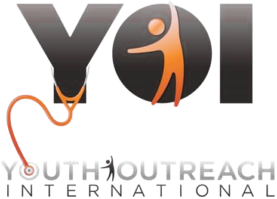

501(c)(3) since 1985 · Lancaster, Pennsylvania
Youth Outreach International
YOI has been a 501(c)(3) since 1985. It was started by Dr. Richard Niemeyer, who had, along with his wife Jean, previously spent 15 years traveling to mission fields all over the world wherever there were emergency situations in need of a doctor. With the charity, they were able to expand their effectiveness in reaching people with medical help, medicines, clinics, food and supplies, to support the work of others who were spreading the gospel of Jesus Christ. Today Youth Outreach continues to work with 3 ministries: two are in Kenya and one is in Haiti.

Ministries
Grace Life Bible College · Kenya
Institution Puits Jacob/Pistos · Haiti
The Maisha Project · Kenya
Our purpose
Although not traveling any more, Youth Outreach continues to work with 3 ministries which they have known for years from multiple visits with them in their own countries and hosting them in their own home. Two are in Kenya and one is in Haiti. These are led very effectively by national Christians and their national staffs who know the language, customs, and culture of their own people. And they can do it very economically to meet their physical and spiritual needs. We have been so impressed by the capability, passion, and vision of these leaders.
OUR PURPOSE with each is not to run or control anything, but to facilitate with donations, shipments, and prayer. Also, we help them when they come to the States with transportation, housing, and finding speaking engagements to raise funds, and to be a sounding board as they are led by God to develop and expand their outreaches. We are in contact with each one on a regular basis by phone, text and emails.


Who we are
What we're for, and how we go about it.
Our vision
Youth Outreach International is a non-denominational evangelical ministry that exists to facilitate worldwide evangelistic opportunities for both the underprivileged and the influential. By meeting medical, educational, social and spiritual needs, we yield improved health and changed lives through Christ.
Our mission
Youth Outreach International shares the love of Jesus in countries where we have relationships and influence, by supplying the best possible medical care, diagnostic equipment and pharmaceuticals. We will gather funds, coordinate transportation, and be instrumental in providing quality health education and disease prevention to all people we encounter.
Envision a world where all children are cared for, valued and loved. Your involvement can help make that vision a reality.
Read our history →Give
You can make a difference today.
Every gift is tax-deductible. Give online in about a minute, or send a check if you'd rather. See what a gift covers →
About 96% of donations go directly to the ministries. The only expenses are tax preparation and the once-a-year donor letter.
Give online
Donate securely through PayPal using a card or your PayPal balance. No account needed.
Mail a check
Make checks or money orders payable to Youth Outreach International and send them to:
Youth Outreach International43 Breeze Way
Lancaster, PA 17602